4.12 Ejercicios
Extremos y derivada
Ejercicio 4.1
Decir si se aplica el teorema de Weierstrass y hallar los extremos absolutos, si existen:
- f(x)=1+x^2 en [-1,2].
- f(x)=1+x^2 si x\in[-1,0)\cup(0,2], con f(0)=3.
- f(x)=1+x^2 en (-1,2).
(a) Se aplica. Mínimo absoluto 1 en x=0 y máximo absoluto 5 en x=2.
(b) No se aplica, porque f no es continua en x=0. Máximo absoluto 5 en x=2. No tiene mínimo absoluto: los valores se acercan a 1, pero no lo alcanzan.
(c) No se aplica, porque el intervalo no es cerrado. Mínimo absoluto 1 en x=0. No tiene máximo absoluto: los valores se acercan a 5, pero no lo alcanzan.
Ejercicio 4.2
Hallar los extremos absolutos de f(x)=x\,e^{-x} en [0,2].
f'(x)=(1-x)\,e^{-x} se anula en x=1. Con f(0)=0, f(1)=\frac1e\approx0.368 y f(2)=\frac2{e^2}\approx0.271, el mínimo absoluto es 0, en x=0, y el máximo absoluto es \frac1e, en x=1.
Ejercicio 4.3
Hallar los extremos absolutos de f(x)=|x^2-1| en [-2,2]. ¿En cuáles de los puntos candidatos existe f'?
Los candidatos son x=\pm2 (bordes), x=0 (donde f'(0)=0) y x=\pm1 (donde f' no existe), con f(\pm2)=3, f(0)=1 y f(\pm1)=0. El máximo absoluto es 3, en x=\pm2, y el mínimo absoluto es 0, en x=\pm1.
La derivada existe en x=0. En x=\pm2, solo la derivada lateral hacia el interior del intervalo. En x=\pm1 no existe.
Ejercicio 4.4
Demostrar que, si f tiene un máximo local en z y es derivable en z, entonces f'(z)=0. (2016/17 7E)
Si h es suficientemente pequeño, f(z+h)-f(z)\le0. Si h>0, el cociente \frac{f(z+h)-f(z)}{h} es \le0, así que f'(z)\le0. Si h<0, es \ge0, así que f'(z)\ge0. Por tanto, f'(z)=0.
Teoremas de Rolle y de Lagrange
Ejercicio 4.5
Estudiar si se puede aplicar el teorema de Rolle a cada función en el intervalo indicado. En caso afirmativo, calcular z.
- f(x)=x-x^3, [0,1]
- f(x)=|x-1|, [0,2]
- f(x)=|x^2-1|, [-2,2]
(a) Se puede aplicar, con z=\frac{\sqrt3}{3}.
(b) No se puede aplicar: f no es derivable en x=1. La conclusión también falla, porque f'(x)=\pm1.
(c) No se puede aplicar: f no es derivable en x=\pm1. Aun así, la conclusión se cumple, con z=0.
Ejercicio 4.6
Estudiar si se puede aplicar el teorema de Lagrange a cada función en el intervalo indicado. En caso afirmativo, calcular z.
- f(x)=4x^2-5x+1, [0,2]
- f(x)=\dfrac1{x^2}, [-1,2]
- f(x)=|x^2-1|, [-3,2]
(a) Se puede aplicar, con z=1.
(b) No se puede aplicar: f no está definida en x=0. La conclusión también falla: la pendiente media es -\frac14 y f'(z)=-\frac14 da z=2, que no está en (-1,2).
(c) No se puede aplicar: f no es derivable en x=\pm1. Aun así, la conclusión se cumple: la pendiente media es -1 y z=\frac12.
Ejercicio 4.7
Estudiar si se puede aplicar el teorema de Lagrange a f(x)=x-x^3 en [-2,1] y, en caso afirmativo, calcular z. (2012/13 5E)
Es un polinomio, así que se puede aplicar. La pendiente media es \frac{0-6}{3}=-2, y 1-3z^2=-2 da z=\pm1. Solo z=-1 está en (-2,1).
Ejercicio 4.8
Hallar a y b para que se pueda aplicar el teorema de Lagrange a esta función en [0,6], y calcular z para esos valores. f(x)=\begin{cases}ax-3 & x<4\\ -x^2+10x-b & x\ge4\end{cases}
Continuidad en x=4: 4a-3=24-b. Derivabilidad en x=4: a=-8+10=2. Por tanto, a=2 y b=19.
La pendiente media es \frac{f(6)-f(0)}{6}=\frac{5+3}{6}=\frac43. En x<4, f'=2, que no vale. En x>4, -2z+10=\frac43 da z=\frac{13}{3}.
Ejercicio 4.9
Sea f una función continua en [-5,7]. En [-5,3] es f(x)=\frac14x^2+\frac14x-2. En (3,7], su derivada es constante e igual al valor de la derivada en x=3 (Figura 4.30). (2016/17 2E)
- Estudiar si f es derivable en x=3.
- Hallar la expresión de f en [3,7].
- Calcular la pendiente media M de f en [-5,7].
- Estudiar si existe z\in(-5,7) tal que f'(z)=M y, si existe, hallarlo.
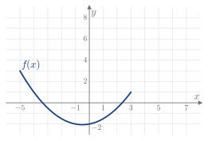
Figura 4.30. Gráfica de f en [-5,3].
(a) Sí: la derivada por la izquierda es f'(3)=\frac32+\frac14=\frac74, y por la derecha vale lo mismo por construcción.
(b) Como f(3)=1, f(x)=1+\frac74(x-3).
(c) f(-5)=3 y f(7)=8, así que M=\frac{5}{12}.
(d) Existe, por el teorema de Lagrange. En (3,7), f'=\frac74\ne M. En (-5,3), \frac z2+\frac14=\frac5{12} da z=\frac13.
Ejercicio 4.10
Sea f definida en [-4,6], con f(x)=x^2-4 en [-4,0] (Figura 4.31). Dar una expresión de f en (0,6] para cada caso: (2021/22 2E)
- El teorema de Lagrange se aplica en [-4,6]. Calcular z.
- El teorema no se aplica, pero su conclusión se cumple.
- El teorema no se aplica y su conclusión no se cumple.
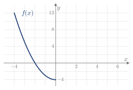
Figura 4.31. Gráfica de f en [-4,0].
Hay muchas respuestas. Por ejemplo:
(a) f(x)=x^2-4. La pendiente media es \frac{32-12}{10}=2, y 2z=2 da z=1.
(b) f(x)=14-x, discontinua en x=0. La pendiente media es \frac{8-12}{10}=-\frac25, y 2z=-\frac25 da z=-\frac15\in(-4,0).
(c) f(x)=x+20, discontinua en x=0. La pendiente media es \frac{26-12}{10}=\frac75. En (-4,0), 2z=\frac75 da z=\frac7{10}, que no está en ese intervalo, y en (0,6), f'=1.
Ejercicio 4.11
Un vehículo recorre D km en m minutos por una carretera con límite de v km/h. ¿Cuándo se puede asegurar que ha superado el límite en algún instante?
Su velocidad media es \frac{60D}{m} km/h. Por el teorema de Lagrange, alcanza ese valor en algún instante, así que se puede asegurar si \frac{60D}{m}>v.
Ejercicio 4.12
Demostrar el teorema de Rolle a partir del de Lagrange. (2014/15 2E)
Si f(a)=f(b), el teorema de Lagrange da z\in(a,b) con f'(z)=\frac{f(b)-f(a)}{b-a}=0.
Teorema del punto fijo
Ejercicio 4.13
Demostrar que la ecuación x=e^{-x} tiene una única solución en [0,1].
La función f(x)=e^{-x} es continua y baja de f(0)=1 a f(1)=\frac1e\approx0.37, así que sus valores están en [0,1]. Además, |f'(x)|=e^{-x}<1 en (0,1). La solución existe y es única (es x\approx0.567).
Ejercicio 4.14
Escribir la ecuación x^3+4x^2-10=0 en la forma x=\sqrt{\dfrac{10}{4+x}} y demostrar que tiene una única solución en [1,2].
Si x\in[1,2], x^2(x+4)=10 equivale a x=\sqrt{\frac{10}{4+x}}, porque x>0.
Sea f(x)=\sqrt{\frac{10}{4+x}}, continua en [1,2]. Al crecer x baja la raíz, así que los valores van de f(1)=\sqrt2\approx1.41 a f(2)=\sqrt{5/3}\approx1.29, y todos están en [1,2]. Además, |f'(x)|=\frac{\sqrt{10}}{2\,(4+x)^{3/2}}\le\frac{\sqrt{10}}{2\cdot5^{3/2}}\approx0.14<1. La solución existe y es única (es x\approx1.365).
Ejercicio 4.15
La función f(x)=x^2 tiene dos puntos fijos en [0,1]. ¿Cuáles son? ¿Qué hipótesis del teorema de unicidad no se cumple?
x^2=x da x=0 y x=1. Las hipótesis de existencia se cumplen, pero |f'(x)|=2x no es menor que 1 en todo (0,1): falla para x\ge\frac12.
Crecimiento y puntos críticos
Ejercicio 4.16
Sea f(x)=\dfrac{x}{1-x^2}. (2016/17 7E)
- Hallar su dominio y los intervalos donde es creciente.
- Razonar si tiene máximos o mínimos.
- Hallar la recta tangente en x=0.
- Dibujar f.
(a) Dominio: x\ne\pm1. Como f'(x)=\dfrac{1+x^2}{(1-x^2)^2}>0, es creciente en cada uno de los intervalos (-\infty,-1), (-1,1) y (1,\infty). No lo es en todo su dominio: f(-2)=\frac23>f(0)=0.
(b) No tiene extremos locales, porque f' nunca se anula y existe en todo el dominio.
(c) f(0)=0 y f'(0)=1: la tangente es y=x.
(d) Ver la Figura 4.32.
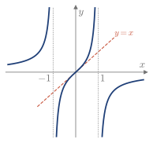
Figura 4.32. f(x)=\frac{x}{1-x^2} y su tangente en x=0.
Ejercicio 4.17
Sea f(x)=e^x(x-1)-x+2 en [0,1]. Estudiar la existencia de extremos locales de f: (2018/19 2E)
- Con el teorema de Lagrange.
- Con el teorema de Bolzano.
Se tiene f'(x)=x\,e^x-1 y f''(x)=e^x(1+x)>0 en (0,1).
(a) Como f(0)=f(1)=1, existe z\in(0,1) con f'(z)=\frac{f(1)-f(0)}{1}=0. Como f''(z)>0, hay un mínimo local en z.
(b) f' es continua, con f'(0)=-1<0 y f'(1)=e-1>0. Por el teorema de Bolzano, existe z\in(0,1) con f'(z)=0, y es un mínimo local por la misma razón.
Ejercicio 4.18
Sea f(x)=(x^2+1)\,e^{3x-x^2}. Demostrar que f' se anula en algún punto de (1,2). (2011/12 7E)
f'(x)=e^{3x-x^2}\left[2x+(x^2+1)(3-2x)\right] es continua, con f'(1)=4e^2>0 y f'(2)=-e^2<0. Por el teorema de Bolzano, se anula en algún punto de (1,2).
Ejercicio 4.19
Sea y(x) una función que cumple y=e^{xy}. (2019/20 3E)
- Calcular y'(x).
- Estudiar el crecimiento y el decrecimiento de y(x).
(a) Derivando, y'=(y+x\,y')\,e^{xy}=y^2+x\,y\,y', así que y'=\dfrac{y^2}{1-xy}.
(b) El numerador es positivo, así que el signo de y' es el de 1-xy. Como y=e^{xy}, xy=\ln y: la función crece si y<e y decrece si y>e. El cambio ocurre en y=e, x=\frac1e, donde la tangente es vertical (Figura 4.33).
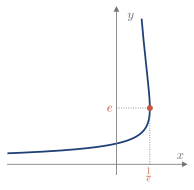
Figura 4.33. La curva y=e^{xy}. Crece por debajo de y=e y decrece por encima.
Ejercicio 4.20
Comprobar que f''(0)=0 en f(x)=x^3, en g(x)=x^4 y en h(x)=-x^4, y clasificar x=0 en cada caso con el test de la primera derivada.
Las tres tienen derivada y segunda derivada nulas en x=0. f'=3x^2 no cambia de signo: no hay extremo. g'=4x^3 pasa de negativa a positiva: mínimo local. h'=-4x^3 pasa de positiva a negativa: máximo local. Por eso f''(0)=0 no decide.
Ejercicio 4.21
Demostrar que, si f'(x)<0 para todo x\in(a,b), f es decreciente en (a,b).
Si x_1<x_2 en (a,b), por el teorema de Lagrange existe z\in(x_1,x_2) con f(x_2)-f(x_1)=f'(z)(x_2-x_1)<0, es decir, f(x_1)>f(x_2).
Concavidad e inflexión
Ejercicio 4.22
Estudiar los intervalos de crecimiento, los extremos locales, los intervalos de concavidad y los puntos de inflexión de:
- f(x)=\dfrac{x+1}{x-1}
- f(x)=\dfrac{x+2}{x^2-1}
- f(x)=x\,e^{-x}
- f(x)=x\,e^{2x}
- f(x)=\dfrac{x^2}{x+1}
- f(x)=x^3-3x^2+4x-2
- f(x)=x^4-6x^2+4
- f(x)=|x^2-1|
(a) Dominio x\ne1. f'=\frac{-2}{(x-1)^2}<0: decreciente en (-\infty,1) y en (1,\infty), sin extremos. f''=\frac{4}{(x-1)^3}: convexa si x<1 y cóncava si x>1. Sin inflexión, porque x=1 no está en el dominio.
(b) Dominio x\ne\pm1. f'=-\frac{x^2+4x+1}{(x^2-1)^2} se anula en x=-2\pm\sqrt3. Decreciente en \left(-\infty,-2-\sqrt3\right), \left(-2+\sqrt3,1\right) y (1,\infty), y creciente en \left(-2-\sqrt3,-1\right) y \left(-1,-2+\sqrt3\right). Mínimo local en x=-2-\sqrt3 y máximo local en x=-2+\sqrt3. f''=\frac{2(x^3+6x^2+3x+2)}{(x^2-1)^3} se anula solo en x\approx-5.52: convexa en (-\infty,-5.52) y (-1,1), y cóncava en (-5.52,-1) y (1,\infty). Inflexión en x\approx-5.52.
(c) f'=(1-x)e^{-x}: crece si x<1 y decrece si x>1; máximo en \left(1,\frac1e\right). f''=(x-2)e^{-x}: convexa si x<2 y cóncava si x>2; inflexión en \left(2,\frac2{e^2}\right).
(d) f'=(1+2x)e^{2x}: decrece si x<-\frac12 y crece si x>-\frac12; mínimo en \left(-\frac12,-\frac1{2e}\right). f''=4(1+x)e^{2x}: convexa si x<-1 y cóncava si x>-1; inflexión en \left(-1,-\frac1{e^2}\right).
(e) Dominio x\ne-1. f'=\frac{x(x+2)}{(x+1)^2}: crece si x<-2 o x>0, y decrece en (-2,-1) y (-1,0). Máximo local en (-2,-4) y mínimo local en (0,0). f''=\frac{2}{(x+1)^3}: convexa si x<-1 y cóncava si x>-1. Sin inflexión.
(f) f'=3x^2-6x+4>0 en todos los puntos: creciente, sin extremos. f''=6(x-1): convexa si x<1 y cóncava si x>1; inflexión en (1,0).
(g) f'=4x(x^2-3): decrece en \left(-\infty,-\sqrt3\right) y \left(0,\sqrt3\right), y crece en \left(-\sqrt3,0\right) y \left(\sqrt3,\infty\right). Mínimos en \left(\pm\sqrt3,-5\right) y máximo en (0,4). f''=12(x^2-1): cóncava si |x|>1 y convexa si |x|<1; inflexión en (\pm1,-1).
(h) f' no existe en x=\pm1 y se anula en x=0. Decrece en (-\infty,-1) y (0,1), y crece en (-1,0) y (1,\infty). Mínimos en (\pm1,0) y máximo en (0,1). f''=2 si |x|>1 (cóncava) y f''=-2 si |x|<1 (convexa). La concavidad cambia en x=\pm1, donde f'' no existe: son puntos de inflexión, además de mínimos.
Ejercicio 4.23
La velocidad de un objeto que se mueve sobre una recta es v(t)=(1-t)(t-3) cm/s, y su posición es x(t), con x(0)=2 cm. (2022/23 7E)
- Estudiar el crecimiento y los extremos de x(t).
- Estudiar la concavidad y los puntos de inflexión de x(t).
- Dibujar x(t) en [0,5].
(a) x'=v se anula en t=1 y t=3. x decrece en (0,1), crece en (1,3) y decrece en (3,5). Mínimo local en t=1 y máximo local en t=3.
(b) x''=-2t+4: cóncava en (0,2) y convexa en (2,5); inflexión en t=2.
(c) Una función con esa derivada y x(0)=2 es x(t)=-\frac{t^3}{3}+2t^2-3t+2 (Figura 4.34).
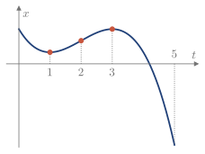
Figura 4.34. x(t), con mínimo en t=1, inflexión en t=2 y máximo en t=3.
Ejercicio 4.24
La función h(x)=-\dfrac{x^3}{160}+\dfrac{3x^2}{80} da la altura de un dron desde que despega hasta que alcanza 0.2 km, tras recorrer 4 km en horizontal (Figura 4.35). (2017/18 2E)
- Calcular h'(x) y h''(x) y dibujarlas en la misma gráfica.
- Estudiar el crecimiento, la concavidad, los extremos y los puntos de inflexión de h en [0,4], e interpretarlos.
- Hallar el punto x=p donde la velocidad de h respecto al desplazamiento horizontal es máxima.
- En x=p, la velocidad horizontal del dron es de 75 km/h. Calcular la velocidad de la altura respecto al tiempo en ese instante.
- A partir del km 4, la velocidad de h respecto al desplazamiento horizontal es constante. Dibujar la trayectoria a partir de ese punto.
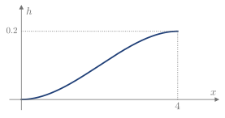
Figura 4.35. Trayectoria del dron entre x=0 y x=4.
(a) h'(x)=-\dfrac{3x^2}{160}+\dfrac{3x}{40} y h''(x)=-\dfrac{3x}{80}+\dfrac{3}{40} (Figura 4.36).
(b) h'>0 en (0,4): h crece, sin extremos en el interior. h''>0 en (0,2), donde es cóncava, y h''<0 en (2,4), donde es convexa. Hay un punto de inflexión en x=2. La altura siempre aumenta: hasta el km 2, cada vez más deprisa, y después, cada vez más despacio.
(c) El máximo de h' está donde h''=0, en p=2, con h'(2)=\frac3{40}.
(d) Por la regla de la cadena, \dfrac{dh}{dt}=\dfrac{dh}{dx}\dfrac{dx}{dt}=\dfrac{3}{40}\cdot75=5.625 km/h.
(e) Si la trayectoria es derivable, la pendiente constante es h'(4)=0. A partir del km 4, el dron vuela horizontalmente a 0.2 km de altura.
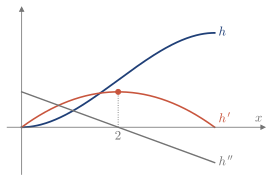
Figura 4.36. h, h' y h''. El máximo de h' coincide con el cero de h'', en x=2.
Estudio a partir de gráficas
Ejercicio 4.25
La Figura 4.37 muestra una función y(x) y su derivada en (a,b). Estudiar el crecimiento y los extremos locales de h(x)=y(x)\,e^{-x}. (2012/13 3E)
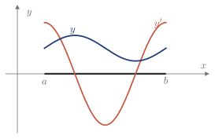
Figura 4.37. y(x) e y'(x) en (a,b).
h'(x)=e^{-x}\,[y'(x)-y(x)] se anula donde se cortan las curvas. Sean c<d esos dos puntos. Como e^{-x}>0, h' tiene el signo de y'-y: positivo en (a,c), negativo en (c,d) y positivo en (d,b). Por tanto, h crece, decrece y crece, con un máximo local en c y un mínimo local en d.
Ejercicio 4.26
Sea f dos veces derivable en (a,b), con función inversa f^{-1}. (2013/14 2E, 2016/17 2E)
- Derivar dos veces f\bigl(f^{-1}(x)\bigr)=x para hallar (f^{-1})' y (f^{-1})''.
- Deducir la concavidad de f^{-1} en los cuatro casos: f creciente o decreciente, y cóncava o convexa.
(a) Por la regla de la cadena, f'\bigl(f^{-1}(x)\bigr)\,(f^{-1})'(x)=1, así que (f^{-1})'(x)=\frac{1}{f'\bigl(f^{-1}(x)\bigr)},\qquad (f^{-1})''(x)=-\frac{f''\bigl(f^{-1}(x)\bigr)}{f'\bigl(f^{-1}(x)\bigr)^3}.
(b) Con los signos de f' y f'': \begin{array}{c|cc} & f\ \text{cóncava} & f\ \text{convexa}\\ \hline f\ \text{creciente} & f^{-1}\ \text{convexa} & f^{-1}\ \text{cóncava}\\ f\ \text{decreciente} & f^{-1}\ \text{cóncava} & f^{-1}\ \text{convexa} \end{array}
Ejercicio 4.27
Sean f y g las funciones de la figura, las mismas del Ejemplo 4.18. Decir si las afirmaciones son ciertas, razonando la respuesta. (2021/22 6E)
- La inversa de f restringida a (3,4) es decreciente.
- La inversa de f restringida a (3,4) es convexa.
- h(x)=g(f(x)) es creciente en (1,2).
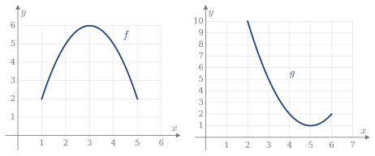
En (3,4), f decrece y es convexa: f'<0 y f''<0. Se usan las fórmulas del Ejercicio 4.26.
(a) Cierta: (f^{-1})'=\frac{1}{f'}<0.
(b) Cierta: (f^{-1})''=-\frac{f''}{f'^3}=-\frac{(-)}{(-)}<0.
(c) Falsa. Si x\in(1,2), f(x)\in(2,5), donde g'<0; además, f'(x)>0. Por tanto, h'=g'(f)\,f'<0 y h es decreciente.
Ejercicio 4.28
Sea f(t)=h(x(t)), donde x(t) y h(x) son las funciones de la Figura 4.38, dos veces derivables. (2025/26 2E)
- Estudiar el crecimiento y los extremos locales de f.
- Estudiar la concavidad y los puntos de inflexión de f.
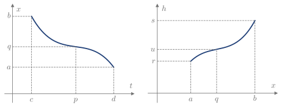
Figura 4.38. x(t) en (c,d), con inflexión en t=p, y h(x) en (a,b), con inflexión en x=q=x(p).
(a) f'(t)=h'(x(t))\,x'(t). Como h'>0 y x'<0 en todos los puntos, f'<0: f es decreciente y no tiene extremos locales.
(b) f''(t)=h''(x(t))\,x'(t)^2+h'(x(t))\,x''(t).
- Si t\in(c,p), x(t)\in(q,b): h''>0, h'>0 y x''>0, así que f''>0 y f es cóncava.
- Si t\in(p,d), x(t)\in(a,q): h''<0, h'>0 y x''<0, así que f''<0 y f es convexa.
Hay un punto de inflexión en t=p.
Optimización
Ejercicio 4.29
Hay que construir un depósito cilíndrico sin tapa de 5000\ \text{m}^3. La base cuesta 5 €/m2 y la pared lateral, 8 €/m2. ¿Qué dimensiones son las más económicas? (2015/16 2E)
Con V=\pi r^2h=5000, el coste en función del radio es c(r)=5\pi r^2+8\cdot2\pi rh=5\pi r^2+\frac{80000}{r},\qquad r>0. c'(r)=10\pi r-\dfrac{80000}{r^2}=0 da r^3=\dfrac{8000}{\pi}, es decir, r=\dfrac{20}{\pi^{1/3}}\approx13.66 m, y entonces h=\dfrac{5000}{\pi r^2}=\dfrac{25}{2\pi^{1/3}}\approx8.53 m.
Como c''(r)=10\pi+\dfrac{160000}{r^3}>0 y es el único punto crítico en r>0, es el mínimo absoluto.
Ejercicio 4.30
Un alambre de 10 m se corta en dos partes. Con una se forma un cuadrado y con la otra, un triángulo equilátero. ¿Por dónde hay que cortarlo para que la suma de las dos áreas sea mínima? (2023/24 2E)
Si el triángulo usa x metros, su lado es \frac x3, y el del cuadrado, \frac{10-x}{4}: A(x)=\frac{\sqrt3}{36}x^2+\frac{(10-x)^2}{16},\qquad x\in[0,10]. A'(x)=\dfrac{\sqrt3}{18}x-\dfrac{10-x}{8}=0 da x=\dfrac{90}{9+4\sqrt3}\approx5.65 m. Comparando, A(5.65)\approx2.72, A(0)=6.25 y A(10)\approx4.81 m2. Hay que usar 5.65 m para el triángulo y 4.35 m para el cuadrado.
Ejercicio 4.31
Dos postes de 2 y 3 m de altura están a 5 m de distancia. Hay que unir sus extremos superiores con un cable sujeto a un punto del suelo situado entre ellos (Figura 4.39). ¿En qué punto se usa la menor cantidad de cable? (2017/18 2E)
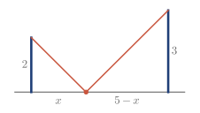
Figura 4.39. Cable sujeto a una distancia x del poste de 2 m.
l(x)=\sqrt{x^2+4}+\sqrt{(5-x)^2+9}, con x\in[0,5]. La condición l'(x)=0 es \frac{x}{\sqrt{x^2+4}}=\frac{5-x}{\sqrt{(5-x)^2+9}}\quad\Longrightarrow\quad 9x^2=4(5-x)^2\quad\Longrightarrow\quad x=2, donde se ha elegido la raíz de [0,5]. Comparando, l(2)=5\sqrt2\approx7.07, l(0)=2+\sqrt{34}\approx7.83 y l(5)=\sqrt{29}+3\approx8.39. El mínimo está a 2 m del poste de 2 m.
Ejercicio 4.32
En la curva \dfrac{x^2}{400}+\dfrac{y^2}{225}=1 se inscribe un rectángulo con los lados paralelos a los ejes (Figura 4.40). Hallar las dimensiones del rectángulo de área máxima. (2019/20 6E)
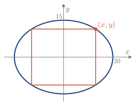
Figura 4.40. Rectángulo inscrito, con un vértice en (x,y).
Con un vértice (x,y) en el primer cuadrante, A=4xy e y=15\sqrt{1-\frac{x^2}{400}}, así que A(x)=60\,x\sqrt{1-\frac{x^2}{400}},\qquad x\in[0,20]. A'(x)=0 da 1-\dfrac{x^2}{400}=\dfrac{x^2}{400}, es decir, x=10\sqrt2, y entonces y=\dfrac{15}{\sqrt2}. Como A(0)=A(20)=0, es el máximo. La base es 2x=20\sqrt2, la altura es 2y=15\sqrt2 y el área es 600.
Ejercicio 4.33
Una recta pasa por el punto (1,2) y corta a los ejes en (a,0) y (0,b), con a,b>0 (Figura 4.41). Hallar a y b para que el triángulo que forman la recta y los ejes tenga área mínima. (2024/25 3E)
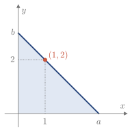
Figura 4.41. Triángulo formado por los ejes y una recta que pasa por (1,2).
Por semejanza de triángulos, \dfrac ba=\dfrac{2}{a-1}, así que b=\dfrac{2a}{a-1}, con a>1, y A(a)=\frac{ab}{2}=\frac{a^2}{a-1},\qquad A'(a)=\frac{a(a-2)}{(a-1)^2}=0\quad\Longrightarrow\quad a=2, porque a>1. Como A''(a)=\dfrac{2}{(a-1)^3}, A''(2)=2>0. Es el único punto crítico en a>1, así que es el mínimo absoluto. Entonces b=4 y el área es A=4.
Comprobación: la recta y=-2x+4 pasa por (1,2).
Polinomio de Taylor
Ejercicio 4.34
Calcular el polinomio de Maclaurin de grado 3 de:
- f(x)=\tan x
- f(x)=\dfrac{1}{x+1}
- f(x)=\ln(\cos x)
- f(x)=\sqrt{x+1}
(a) P_3(x)=x+\dfrac{x^3}{3}. (b) P_3(x)=1-x+x^2-x^3. (c) P_3(x)=-\dfrac{x^2}{2}. (d) P_3(x)=1+\dfrac x2-\dfrac{x^2}{8}+\dfrac{x^3}{16}.
Ejercicio 4.35
Calcular el polinomio de Maclaurin de:
- f(x)=e^{-x}, grado n
- f(x)=\ln(1+x), grado n
- f(x)=\sinh x, grado 2n+1
- f(x)=\cos2x, grado 2n
(a) \sum\limits_{k=0}^{n}\dfrac{(-1)^kx^k}{k!}. (b) \sum\limits_{k=1}^{n}\dfrac{(-1)^{k-1}x^k}{k}. (c) \sum\limits_{k=0}^{n}\dfrac{x^{2k+1}}{(2k+1)!}. (d) \sum\limits_{k=0}^{n}\dfrac{(-1)^k(2x)^{2k}}{(2k)!}.
Ejercicio 4.36
Calcular el polinomio de Taylor de grado 2 de f(x)=x^4-3x^2-2x en a=-1. ¿Qué grado debe tener el polinomio para coincidir con f en todos los puntos?
f(-1)=0, f'(-1)=0 y f''(-1)=6, así que P_2(x)=3(x+1)^2. Hace falta grado 4, porque f es un polinomio de grado 4 y sus derivadas de orden 5 o más son cero.
Ejercicio 4.37
P_2(x)=-x+2x^2 es el polinomio de Maclaurin de grado 2 de f. Calcular el de g(x)=e^{f(x)}. (2019/20 2E)
Del polinomio se lee f(0)=0, f'(0)=-1 y f''(0)=4. Como g'=f'g y g''=f''g+f'g', resulta g(0)=1, g'(0)=-1 y g''(0)=5. Por tanto, Q_2(x)=1-x+\dfrac52x^2.
Ejercicio 4.38
Sea y=e^{xy} la curva del Ejercicio 4.19. (2024/25 7E)
- Calcular su polinomio de Maclaurin de grado 2, en el punto (0,1).
- Aproximar el valor de y en x=0.1.
(a) Derivando, y'=(y+xy')\,e^{xy} e y''=(y+xy')^2e^{xy}+(2y'+xy'')\,e^{xy}. En (0,1), y'=1 e y''=3, así que P_2(x)=1+x+\dfrac32x^2.
(b) y(0.1)\approx P_2(0.1)=1.115.
Ejercicio 4.39
Sea f la función de la figura y P_2(x)=a+b(x-4)+c(x-4)^2 su polinomio de Taylor de grado 2 en x=4. Decir el signo de a, b y c. (2021/22 6E)
a=f(4)>0. b=f'(4)<0, porque f decrece. c=\frac{f''(4)}{2}<0, porque f es convexa.
Error de Taylor
Ejercicio 4.40
Calcular el polinomio de Maclaurin indicado y acotar el error en x=1:
- f(x)=e^x, grado 4
- f(x)=\cos x, grado 5
- f(x)=\sqrt{x+1}, grado 2
(a) P_4(x)=1+x+\dfrac{x^2}{2!}+\dfrac{x^3}{3!}+\dfrac{x^4}{4!}, con |E_4(1)|\le\dfrac{e}{5!}.
(b) P_5(x)=1-\dfrac{x^2}{2!}+\dfrac{x^4}{4!}, con |E_5(1)|\le\dfrac{1}{6!}.
(c) P_2(x)=1+\dfrac x2-\dfrac{x^2}{8}, con |E_2(1)|\le\dfrac{1}{16}.
Ejercicio 4.41
Sea f(x)=\sqrt[3]{1+x}. (2020/21 2E)
- Calcular su polinomio de Maclaurin de grado 2.
- Aproximar \sqrt[3]{0.9} con ese polinomio.
- Acotar el error cometido.
(a) P_2(x)=1+\dfrac x3-\dfrac{x^2}{9}.
(b) \sqrt[3]{0.9}\approx P_2(-0.1)=\dfrac{869}{900}\approx0.965556.
(c) f'''(x)=\frac{10}{27}(1+x)^{-8/3} es decreciente, así que su máximo en (-0.1,0) está en x=-0.1 y vale 0.491 aproximadamente. Por tanto, |E_2(-0.1)|\le\dfrac{(0.1)^3}{3!}\cdot0.491\approx8.2\cdot10^{-5}.
Ejercicio 4.42
La Figura 4.42 muestra la derivada quinta de una función y(x). Se aproxima y(0) con el polinomio de Taylor de grado 4 centrado en a=-2. Acotar el error cometido. (2012/13 6E)
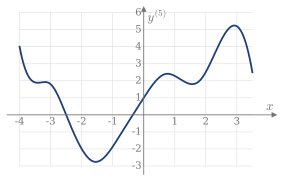
Figura 4.42. Gráfica de y^{(5)}(x).
E_4(0)=\dfrac{y^{(5)}(z)}{5!}\,2^5, con z\in(-2,0). En ese intervalo, |y^{(5)}|<3 según la gráfica, así que |E_4(0)|<3\cdot\dfrac{2^5}{5!}=0.8.
Ejercicio 4.43
La Figura 4.43 muestra y(x), y'(x) e y''(x). (2022/23 2E)
- Calcular el polinomio de Taylor de grado 1 en a=-1.
- Acotar el error de aproximar y\left(-\frac13\right) con ese polinomio.
- Calcular el error exacto y comprobar la cota.
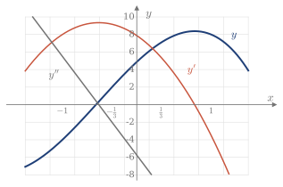
Figura 4.43. y, y' e y''.
(a) P_1(x)=-4+8(x+1).
(b) |y''|<6 en \left(-1,-\frac13\right), así que |E|<6\cdot\dfrac{(2/3)^2}{2!}=\dfrac43.
(c) y\left(-\frac13\right)=2 y P_1\left(-\frac13\right)=\frac43, así que |E|=\frac23<\frac43.
Ejercicio 4.44
Para la función de la Figura 4.43, hallar el punto z del teorema de Taylor con a=-1, n=1 y x=1. (2013/14 3E)
El error real es E_1(1)=y(1)-P_1(1)=8-12=-4. Por el teorema, E_1(1)=\dfrac{y''(z)}{2}\,2^2=2y''(z). Igualando, y''(z)=-2, y en la gráfica se lee z=-\frac13.
Serie de Taylor
Ejercicio 4.45
Calcular la serie de Maclaurin de: (e) 2018/19 5E, (f) 2018/19 3E
- f(x)=\sin x
- f(x)=x\sin2x
- f(x)=x^3e^x
- f(x)=\dfrac{1}{1-x}
- f(x)=e^{-|x|}
- f(x)=\ln\dfrac{1+x}{1-x}
(a) \sum\limits_{n=0}^{\infty}\dfrac{(-1)^nx^{2n+1}}{(2n+1)!}, para todo x.
(b) \sum\limits_{n=0}^{\infty}\dfrac{(-1)^n2^{2n+1}x^{2n+2}}{(2n+1)!}, para todo x.
(c) \sum\limits_{n=0}^{\infty}\dfrac{x^{n+3}}{n!}, para todo x.
(d) \sum\limits_{n=0}^{\infty}x^n, para x\in(-1,1).
(e) No tiene: f no es derivable en x=0.
(f) Como f(x)=\ln(1+x)-\ln(1-x), restando las dos series, 2\sum\limits_{n=0}^{\infty}\dfrac{x^{2n+1}}{2n+1}, para x\in(-1,1).
Ejercicio 4.46
Sea y(x) una función con y'(x)=y(x)+e^x e y(0)=0. Calcular su serie de Maclaurin y deducir de ella cuál es la función. (2018/19 2E)
Derivando la ecuación, y^{(n)}(0)=y^{(n-1)}(0)+1, así que y^{(n)}(0)=n. Por tanto, y(x)=\sum_{n=1}^{\infty}\frac{n\,x^n}{n!}=\sum_{n=1}^{\infty}\frac{x^n}{(n-1)!}=x\left(1+x+\frac{x^2}{2!}+\dots\right)=x\,e^x. Comprobación: (xe^x)'=e^x+xe^x=y+e^x.
Ejercicio 4.47
Sustituyendo x por ix en la serie de e^x, obtener la fórmula de Euler, e^{ix}=\cos x+i\sin x.
Con i^2=-1, los términos pares son reales y los impares, imaginarios: e^{ix}=\left(1-\frac{x^2}{2!}+\frac{x^4}{4!}-\dots\right)+i\left(x-\frac{x^3}{3!}+\frac{x^5}{5!}-\dots\right)=\cos x+i\sin x. Es un argumento formal: las series se han obtenido con x real y no se demuestra aquí que la de e^x valga para números complejos.